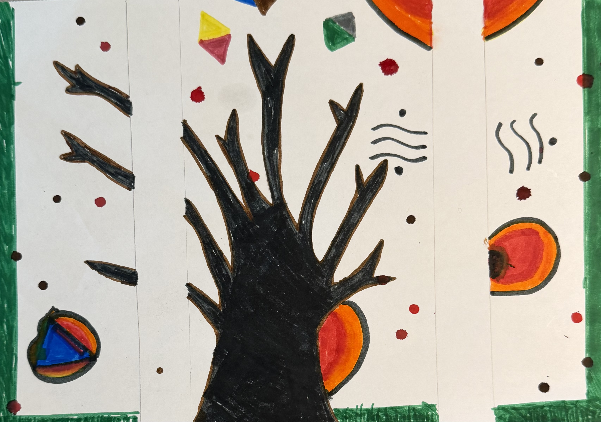
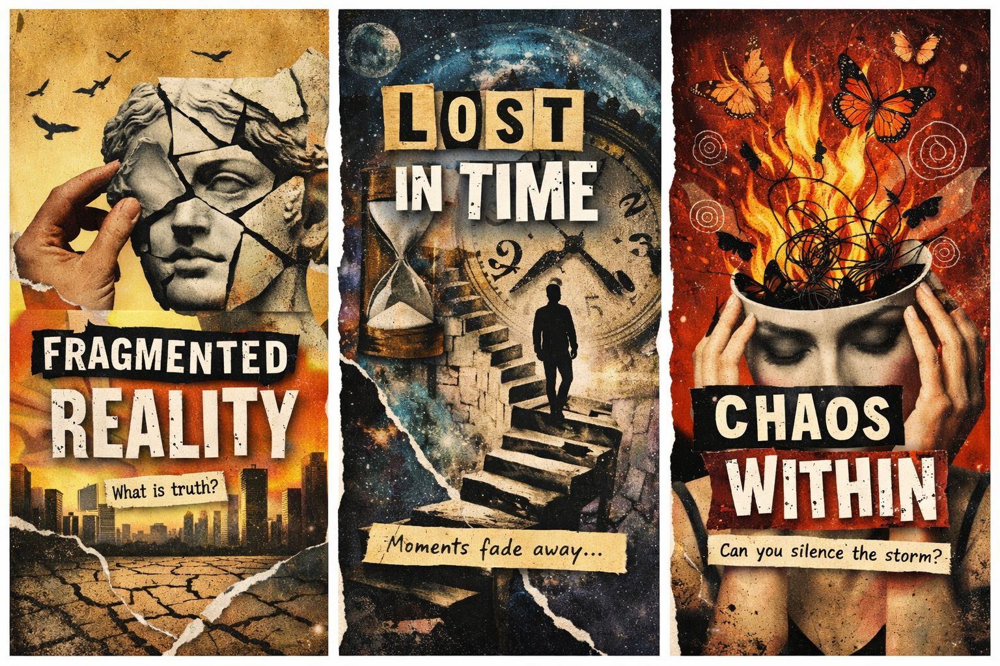
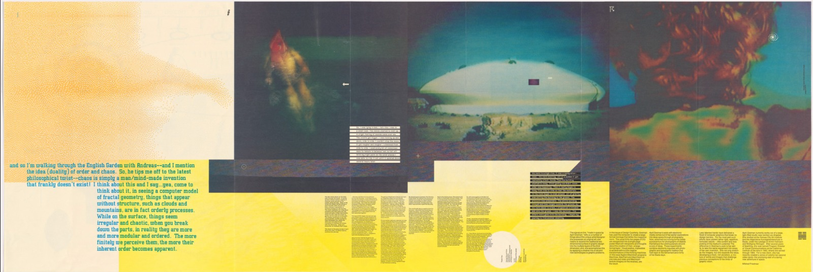
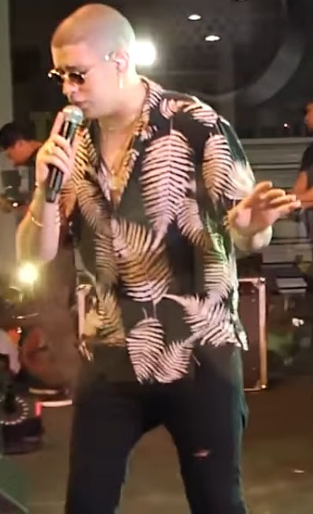
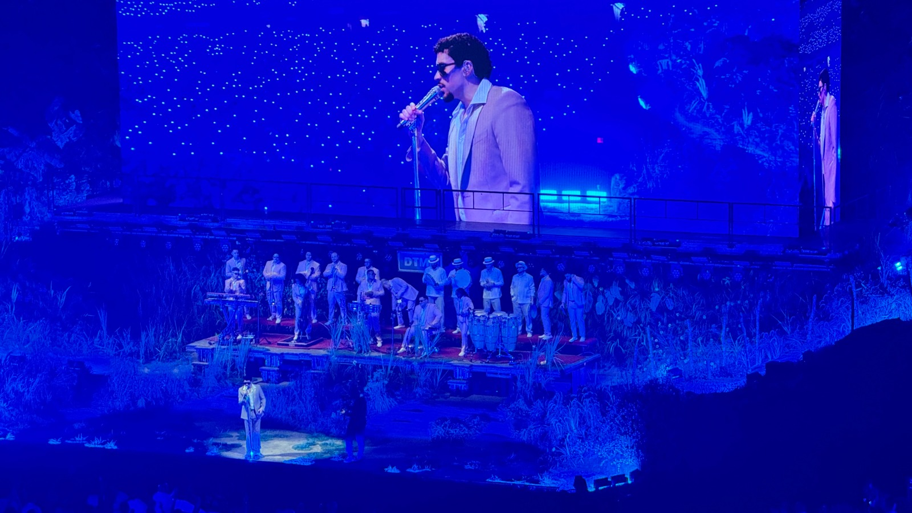
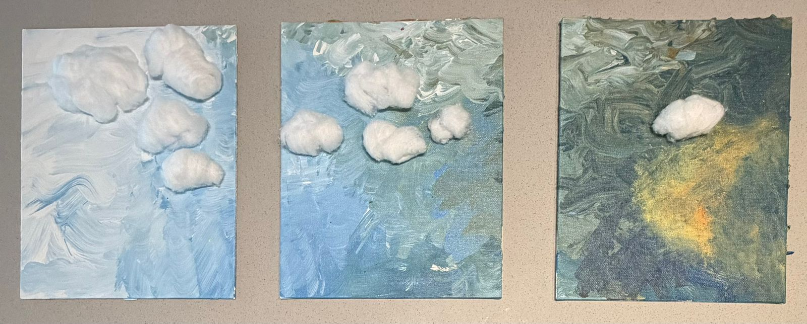
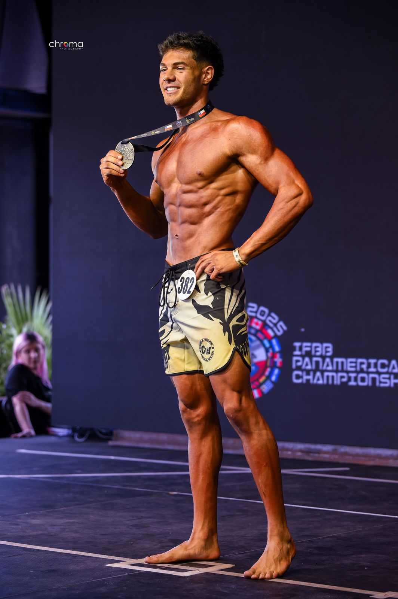

01
Reality
Mixed media on paper · 2026

Mixed media on paper · 2026

Paper collage · 2026

Digital collage · 2026
Paper collage
2026
Stars and a moon cut from paper, quietly arranged over a beige and blue background. It's about the moments that slip by without you noticing, and what stays behind when they're gone.

DOES IT MAKE SENSE? · Design Quarterly #133

The Burning Giraffe · 1937

Performance Photography
Something about this cloud felt like it was choosing to be up there alone, not lost, just far from everything for a little while. I made this piece thinking about those days when you want some distance from the noise without having to explain why.

Franco Yazigi. 22 years old, from Chile.
